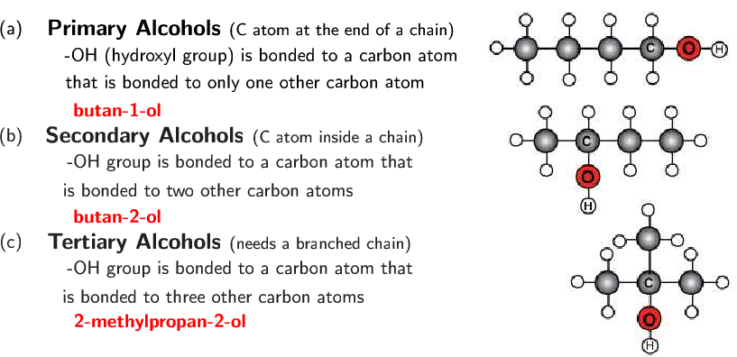

The way in which a compound will react is determined by a particular characteristic of a group of atoms and the way they are bonded (e.g. double C\(-\)C bond, C\(-\)OH group). This is called the functional group. This group is important in determining how a compound will react. The same functional group will undergo the same or similar chemical reaction(s) regardless of the size of the molecule it is a part of. Molecules can have more than one functional group.
Functional group
In organic chemistry a functional group is a specific group of atoms (and the bonds between them) that are responsible for the characteristic chemical reactions of those molecules.
In one group of organic compounds, called the hydrocarbons, the single, double and triple bonds between carbon atoms give rise to the alkanes, alkenes and alkynes, respectively. The carbon-carbon bonds are examples of functional groups. Another functional group, the alcohols, contains an oxygen and a hydrogen atom bonded to each other to form the functional group (in other words an alcohol has an \(\text{OH}\) in it). All alcohols will contain an oxygen and a hydrogen atom bonded together in some part of the molecule.
Table tab-organic-summary summarises some of the common functional groups. We will look at these in more detail later in this chapter.
There are some important points to note as we discuss functional groups:
The beginning of a compound name (prefix) comes from the number of carbons in the longest chain:
meth-
carbon
eth-
carbon
prop-
carbon
but-
carbon
The end of a compound name (suffix) comes from the functional group, e.g. an alkane has the suffix -ane. Refer to the examples in Table tab-organic-summary.
For more information on naming organic molecules see Section 4.3.
Saturated and unsaturated structures
Hydrocarbons that contain only single bonds are called saturated hydrocarbons because each carbon atom is bonded to as many hydrogen atoms as possible. Figure fig-organic-saturated shows a molecule of ethane, which is a saturated hydrocarbon.
A saturated compound has no double or triple bonds. All carbon atoms are bonded to four other atoms.
Unsaturated compounds
An unsaturated compound contains double or triple bonds. A carbon may therefore be bonded to only two or three other atoms.
Hydrocarbons that contain double or triple bonds are called unsaturated hydrocarbons because they don't contain as many hydrogen atoms as possible.
Figure fig-organic-unsaturated shows molecules of ethene and ethyne which are unsaturated hydrocarbons. If you compare the number of carbon and hydrogen atoms in a molecule of ethane and a molecule of ethene, you will see that the number of hydrogen atoms in ethene is less than the number of hydrogen atoms in ethane despite the fact that they both contain two carbon atoms. In order for an unsaturated hydrocarbon compound to become saturated, a double (or triple) bond has to be broken, and additional hydrogen atoms added.
Let us first look at a group of organic compounds known as the hydrocarbons.
Hydrocarbon
An organic molecule which contains only carbon and hydrogen atoms with no other functional groups besides single, double or triple carbon-carbon bonds.
An aliphatic compound is one that does not contain an aromatic ring:
The simplest aromatic compound is benzene. There are aliphatic cyclic compounds, but if a compound contains an aromatic ring it is an aromatic compound, not an aliphatic one.
The hydrocarbons that we are going to look at are called aliphatic compounds. The aliphatic compounds are divided into acyclic compounds (chain structures) and cyclic compounds (ring structures). The chain structures are further divided into structures that contain only single bonds (alkanes), those that contain at least one double bond (alkenes) and those that contain at least one triple bond (alkynes).
Cyclic compounds (which will not be covered in this book) include structures such as a cyclopentane ring, which is found in insulating foam and in appliances such as fridges and freezers. Figure fig-organic-classhydro summarises the classification of the hydrocarbons.
We will now look at each of the acyclic, aliphatic hydrocarbon groups in more detail. These groups are the alkanes, the alkenes and the alkynes.
The alkanes
The alkanes are hydrocarbons that only contain single covalent bonds between their carbon atoms. This means that they are saturated compounds and are quite unreactive. The simplest alkane has only one carbon atom and is called methane. This molecule is shown in Figure fig-organic-methane.
The (a) structural, (b) condensed structural and (c) molecular formula representations of propane. d) A three-dimensional computer generated model of propane.
When you look at the molecular formula for each of the alkanes, you should notice a pattern developing. For each carbon atom that is added to the molecule, two hydrogen atoms are added. In other words, each molecule differs from the one before it by \(\text{CH}_{2}\). This is called a homologous series. The alkanes have the general formula: .
Homologous series
A homologous series is a series of compounds with the same general formula. All molecules in this series will contain the same functional groups.
Some fungi use alkanes as a source of carbon and energy. One fungus amorphotheca resinae (also known as kerosene fungus) prefers the alkanes used in aviation fuel, and this can cause problems for aircraft in tropical areas.
The general formula is similar to both the molecular formula and the condensed structural formula. The functional group is written as it would be in the condensed structural formula (to make it more obvious), while the rest of the atoms in the compound are written in the same style as molecular formula.
The alkanes are the most important source of fuel in the world and are used extensively in the chemical industry.
Some are gases (e.g. methane and ethane).
a) Methane gas bubbles burning and b) propane (under high pressure) being transported by truck.
Others are liquid fuels (e.g. octane, an important component of petrol).
Liquid fuels that contain octane are kept in tanks at petrol stations.
The alkenes
In the alkenes there must be at least one double bond between two carbon atoms. This means that they are unsaturated (contain less hydrogen atoms for every carbon atom) and are more reactive than the alkanes. The simplest alkene is ethene (also known as ethylene), which is shown in Figure fig-organic-ethene3rep.
The (a) structural, (b) condensed structural and (c) molecular formula representations of ethene. d) An atomic model of ethene.
As with the alkanes, the alkenes also form a homologous series. They have the general formula: . The second alkene in the series would therefore be \(\text{C}_{3}\text{H}_{6}\). This molecule is known as propene (Figure fig-organic-propene3rep).
The (a) structural, (b) condensed structural and (c) molecular formula representations of propene.
There can be more than one double bond in an alkene as shown in Figure fig-organic-pentene. The naming of these compounds is covered in Section 4.3, IUPAC naming and formulae.
Note that if an alkene has two double bonds, it is called a diene.
The structural representations of (a) pent-1-ene and (b) pent-1,3-diene.
If you don't understand the names of compounds, don't worry. We will go into more detail on this later in the chapter.
The alkenes are more reactive than the alkanes because they are unsaturated. As with the alkanes, compounds that have four or less carbon atoms are gases at room temperature, while those with five or more carbon atoms are liquids.
The alkenes have a variety of uses:
For example, ethene is a chemical compound used in plants to stimulate the ripening of fruits and the opening of flowers.
a) Unripe (green) and ripe (yellow) bananas and b) a flowering plant.
Propene is an important compound in the petrochemicals industry. It is used to make polypropylene (see Section 4.7 for more information) and is also used as a fuel gas for other industrial processes.
A lamp made of polypropylene. Propene is used to make polypropylene.
The alkynes
In the alkynes there must be at least one triple bond between two of the carbon atoms. They are unsaturated compounds and are therefore highly reactive. Their general formula is . For example but-1-yne has the molecular formula . The simplest alkyne is ethyne (Figure fig-organic-ethyne), also known as acetylene. Many of the alkynes are used to synthesise other chemical products.
Acetylene is the industrial name for the organic compound ethyne. The raw materials that are needed to make acetylene are calcium carbonate and coal. An important use of acetylene is in oxyacetylene gas welding. The fuel gas burns with oxygen in a torch. An incredibly high heat is produced, and this is hot enough to melt metal.
The (a) structural, (b) condensed structural and (c) molecular representations of ethyne (acetylene). d) An atomic model of ethyne.
Remember that organic molecules do not need to be straight chains. They can have branched groups as well, as shown in Figure fig-organic-branchedchain.
A methyl branched group on carbon 2 of butane (2-methylbutane).
A summary of the relative reactivity and the homologous series that occur in the hydrocarbons is given in Table tab-organic-homologousseries.
Functional group
Homologous series
Reactivity
alkane
low reactivity
alkene
reactive
alkyne
high reactivity
A summary of the homologous series of the hydrocarbons.
Liquid bromine is highly corrosive and toxic. Handle with extreme care!
Saturated vs. unsaturated compounds
Aim
To study the effect of bromine water and potassium permanganate on saturated and unsaturated compounds.
Apparatus
cyclohexane, cyclohexene, bromine water (\(\text{Br}_{2}(\text{aq})\)), potassium permanganate (\(\text{KMnO}_{4}\)) in an alkaline (basic) solution
Liquid bromine (required to make bromine water) is a highly volatile, corrosive and toxic compound. Please handle with care: wear the appropriate safety clothing including gloves, labcoat, safety glasses and mask. Work in a fumehood. If you do not have the apparatus to handle liquid bromine safely use potassium permanganate only.
4 glass containers (test tubes/beakers/shallow basins), two A4 sheets of paper
2 plastic pipettes
Method
Label one piece of paper A and the other piece of paper B.
Place ~ of cyclohexane into a container and place the container on paper A.
Place ~ of cyclohexane into a container and place the container on paper B.
Repeat steps 2 and 3 with cyclohexene.
Take ~ of bromine water and add it to the beaker of cyclohexane on paper A. Observe any colour changes.
Repeat step 5 with the beaker of cyclohexene on paper A.
Take ~ of \(\text{KMnO}_{4}\) and add it to the beaker of cyclohexane on paper B. Observe any colour changes.
Repeat step 7 with the beaker of cyclohexene on paper B.
Results
Record your results in the table below.
Compound
Initial colour
Solution added
Final colour
cyclohexane
bromine water
cyclohexane
\(\text{KMnO}_{4}\)
cyclohexene
bromine water
cyclohexene
\(\text{KMnO}_{4}\)
Alkanes have the formula: \(\text{R}-\text{CH}_{2}-\text{CH}_{2}-\text{R}'\). Alkenes have the formula: \(\text{R}-\text{CH}=\text{CH}-\text{R}\).
Questions
Which of these compounds (cyclohexane, cyclohexene) is saturated and which is unsaturated?
What colour changes did you observe with the alkane compound?
What colour changes did you observe with the alkene compound?
Can you suggest a reason for the differences?
Discussion and conclusion
Bromine water and \(\text{KMnO}_{4}\) both have strong colours. Cyclohexane is a saturated, colourless liquid. When bromine water and \(\text{KMnO}_{4}\) are added to the cyclohexane there is no reaction and the solution becomes the colour of the bromine water or \(\text{KMnO}_{4}\).
Cyclohexene is also a colourless liquid, but it is unsaturated. This results in a reaction with bromine water and with \(\text{KMnO}_{4}\). Cyclohexene will form a bromoalkane with bromine water. Bromoalkanes are colourless liquids and the solution will be colourless - liquid bromine is decolourised by cyclohexene. Similarly \(\text{KMnO}_{4}\) will be decolourised by the cyclohexene.
Exercises
Answer these questions on the hydrocarbons.
What is the difference between the alkanes, alkenes and alkynes?
Alkanes have only single bonds between carbon atoms, alkenes have at least one double bond between carbon atoms and alkynes have at least one triple bond between carbon atoms.
Give the general formula for the alkynes
\(\text{C}_{\text{n}}\text{H}_{2\text{n}-2}\)
Of the alkanes, alkenes and alkynes which is:
saturated
the alkanes
unsaturated
the alkenes and alkynes
Which series is the most reactive? Explain why.
The alkynes are the most reactive. The unsaturated triple bond is more reactive than a double or a single bond.
Fermentation can refer to the conversion of sugar to alcohol using yeast (a fungus). The process of fermentation produces items such as wine, beer and yogurt. To make wine, grape juice is fermented to produce alcohol. This reaction is shown below:
\(\text{C}_{6}\text{H}_{12}\text{O}_{6}\) \(2\text{CO}_{2} + 2\text{C}_{2}\text{H}_{5}\text{OH}+\) energy
An alcohol is any organic compound where there is a hydroxyl functional group \((-\text{OH})\) bound to a carbon atom. The general formula for a simple alcohol is \(\text{C}_{\text{n}}\text{H}_{2\text{n}+1}\text{OH}\).
The (a) structural, (b) condensed structural and (c) molecular formula representations of ethanol. d) An atomic model of ethanol.
There are three possible types of carbon atoms - primary, secondary and tertiary. A primary carbon is attached to only one other carbon atom. A secondary carbon is attached to two other carbon atoms, while a tertiary carbon atom is attached to three other carbon atoms.
There can be a functional group attached to these different types of carbon atom. When a hydroxyl \((-\text{OH})\) functional group is attached to a primary carbon atom it is called a primary alcohol. For a secondary alcohol the hydroxyl is bonded to a secondary carbon atom. When the hydroxyl is bonded to a tertiary carbon atom it is a tertiary alcohol. Examples are given below.

<code>
(-5.1,-6.2)(9,0.7)
\rput(-4.8,0){(a)}
\rput(-0.3,0){\textbf{\large Primary Alcohols }{\text{\small (C atom at the end of a chain)}}}
\rput(-0.1,-0.5){\text{-OH (hydroxyl group) is bonded to a carbon atom}}
\rput(-0.4,-1){\text{that is bonded to only one other carbon atom}}
\rput(-2.8,-1.5){\textbf{\red butan-1-ol}}
\rput(-4.8,-2){(b)}
\rput(-0.6,-2){\textbf{\large Secondary Alcohols }{\text{\small (C atom inside a chain)}}}
\rput(-0.5,-2.5){\text{-OH group is bonded to a carbon atom that}}
\rput(-1.1,-3){\text{is bonded to two other carbon atoms}}
\rput(-2.8,-3.5){\textbf{\red butan-2-ol}}
\rput(-4.8,-4){(c)}
\rput(-0.7,-4){\textbf{\large Tertiary Alcohols }{\text{\small (needs a branched chain)}}}
\rput(-0.5,-4.5){\text{-OH group is bonded to a carbon atom that}}
\rput(-1,-5){\text{is bonded to three other carbon atoms}}
\rput(-2,-5.5){\textbf{\red 2-methylpropan-2-ol}}
\rput(6.4,-2.8){\includegraphics{images/alcohols.eps}}
</code>
A a) primary (butan-1-ol), b) secondary (butan-2-ol) and c) tertiary (2-methylpropan-2-ol) alcohol.
The alcohols have a number of different uses:
methylated spirits is ethanol with methanol added
Methanol is toxic. If ingested it forms formic acid or formate salts, which damages the central nervous system and can cause blindness, coma or death.
all alcohols are toxic, but in low concentrations ethanol can be used in alcoholic drinks
ethanol is the only alcohol used in alcoholic drinks
ethanol is used as an industrial solvent
methanol and ethanol can both be used as a fuel and they burn more cleanly than petrol or diesel (refer to Grade 11 for more information on biofuels as an alternative energy resource.)
ethanol is used as a solvent in medical drugs, perfumes and plant essences
ethanol is an antiseptic
Exercises
Give the structural and condensed structural formula for the following alcohols. State, with reasons, whether the compound is a primary, secondary, or tertiary alcohol.
\(\text{CH}_{3}\text{CH}_{2}\text{CH}(\text{OH})\text{CH}_{3}\) or \(\text{CH}_{3}\text{CH}(\text{OH})\text{CH}_{2}\text{CH}_{3}\)
This is a secondary alcohol. The hydroxyl (\(-\text{OH}\)) group is bonded to a carbon atom that is bonded to two other carbon atoms.
Alkyl halides
Alkyl halides are hydrocarbons with one hydrogen replaced by a halogen atom (F, Cl, Br, I). The alkyl is due to the fact that a hydrocarbon branched group has the suffix -yl and is one of the three hydrocarbons: alkanes, alkenes or alkynes. These alkyl groups contain one or more halogen atoms, which leads to the name alkyl halides. Our focus will be on the alkane alkyl halides also known as the haloalkanes (or halogenoalkanes) (see Table tab-organic-summary).
Representations of a halomethane where X can be F, Cl, Br or I: a) structural, b) molecular formula, c) 3-D line drawing, d) 3-D ball and stick model and e) 3-D space-filling model.
Representations of 2-halopropane where X can be F, Cl, Br or I: (a) structural, (b) condensed structural, (c) molecular formula and d) a ball and stick model.
Note that the halogen atom is called a substituent.
A fluorine atom as a substituent on carbon 2 of butane (2-fluorobutane).
Remember the branched chain shown in Figure fig-organic-branchedchain. That branched chain is also called a substituent.
Substituent
A substituent is an atom or group of atoms bonded to a carbon chain. This can be an inorganic atom (e.g. halogen) or an alkyl group that is shorter than the main group.
Chloroform was used as an anesthetic for years. However, aside from causing dizziness, fatigue and headaches, it was discovered to be toxic, often fatally so. Even non-fatal doses can cause damage to the kidneys and liver. Chloroform can sometimes be found in cough syrups, although not often anymore.
CFC stands for chlorofluorocarbons. Due to their low toxicity and low reactivity, CFCs were widely used in refrigeration and as propellants in aerosols. However, the low reactivity means that CFCs can get into the upper atmosphere where they are degraded by UV light and damage the ozone layer.
An organic compound is always named in accordance with the longest chain of carbon atoms that contains the functional group. If the substituent is an alkyl group it is known as a branched chain.
Some uses of haloalkanes include:
in fire extinguishers
as aerosol propellants
in refrigeration
generating foamed plastics
solvents in dry cleaning processes (not actually dry, but no water is required)
Chloroform
Haloalkanes can contain more than one halogen atom. Chloromethanes are substances that can be used as anaesthetics during operations. One example is trichloromethane, also known as chloroform (Figure fig-organic-chloroform).
a) A compound containing a carbonyl group, b) an aldehyde and c) a ketone.
In Figure fig-organic-carbonyl and are used to represent the rest of the carbon and hydrogen atoms in the molecule. For example could represent an alkyl chain, or a hydrogen atom.
If the functional group is on the end of the carbon chain, the organic compound is called an aldehyde. Being at the end of the chain means that or represents a hydrogen atom. The simplest aldehyde is methanal. The aldehyde containing 4 carbon atoms, butanal, is illustrated in Figure fig-organic-butanal. In this example represents \(\text{H}\) and represents \(\text{CH}_{3}\text{CH}_{2}\text{CH}_{2}\).
Note that the condensed structural formula for an aldehyde ends in \(\text{CHO}\) not \(\text{COH}\). This is because COH could be confused with the hydroxyl (\(-\text{OH}\)) group of an alochol.
The (a) structural, (b) condensed structural and (c) molecular formula representations of butanal. d) An atomic model of butanal.
Some uses of aldehydes include:
in resins (over million tons of formaldehyde are produced per year)
in the production of plasticisers and alcohols used in detergents
in perfumes and flavourants
If the carbonyl group is in the middle of the carbon chain, the compound is called a ketone. Being in the middle of the chain means that and cannot represent \(\text{H}\). The simplest ketone is propanone (also known as acetone), which contains three carbon atoms. The ketone containing 4 carbon atoms, butanone, is illustrated in Figure fig-organic-butanone.
The (a) structural, (b) condensed structural and (c) molecular formula representations of butanone. d) An atomic model of butanone.
The molecular formulae representations for propanal and propanone are identical. This is why structural and condensed structural representations are necessary.
Some uses of ketones include:
as solvents
in the production of polymers
in the production of pharmaceuticals
The general formula for both the aldehydes and ketones can be written as: . This means that they cannot be told apart from their general formula alone. There are more complex general formulas that allow aldehydes and ketones to be distinguished, but they are complex and not covered in this book.
Carboxylic acids
Carboxylic acids are organic acids that are characterised by having a carboxyl group, written as \(-\text{COOH}\). In a carboxyl group a carbon atom is double-bonded to an oxygen atom (carbonyl group), and it is also bonded to a hydroxyl group. The simplest carboxylic acid, methanoic acid, is shown in Figure fig-organic-methanoic acid and ethanoic acid is shown in Figure fig-organic-ethanoic acid.
The (a) structural, (b) condensed structural and (c) molecular formula representations of ethanoic acid. d) An atomic model of ethanoic acid.
Carboxylic acids are widespread in nature. Methanoic acid (also known as formic acid) has the formula \(\text{HCOOH}\) and is found in insect stings. Ethanoic acid \((\text{CH}_{3}\text{COOH})\), or acetic acid, is the main component of vinegar. More complex organic acids also have a variety of different functions. Benzoic acid \((\text{C}_{6}\text{H}_{5}\text{COOH})\) for example, is used as a food preservative. Carboxylic acids have the general formula: .
Ethanoic acid can be produced through the oxidation of ethanol upon exposure to the oxygen in air. This is why wine that is left too long can taste acidic. Wine can easily go sour if exposed to the oxygen molecules (\(\text{O}_{2}\)) in the air, especially if the weather is warm.
A certain type of ant, called formicine ants, manufacture and secrete formic acid, which is used to defend themselves against other organisms that might try to eat them.
The oxidation of ethanol to ethanoic acid can also be seen in the reaction of ethanol with potassium dichromate:
Read the following extract taken from HowStuffWorks (12/08/13):
The Breathalyzer device contains:
A system to sample the breath of the suspect
Two glass vials containing the chemical reaction mixture
A system of photocells connected to a meter to measure the color change associated with the chemical reaction
To measure alcohol, a suspect breathes into the device. The breath sample is bubbled in one vial through a mixture of sulfuric acid, potassium dichromate, silver nitrate and water. The principle of the measurement is based on the following chemical reaction:
In this reaction:
The sulfuric acid removes the alcohol from the air into a liquid solution.
The alcohol reacts with potassium dichromate to produce: chromium sulfate potassium sulfate acetic acid water
The silver nitrate is a catalyst, a substance that makes a reaction go faster without participating in it. The sulfuric acid, in addition to removing the alcohol from the air, also might provide the acidic condition needed for this reaction.
During this reaction, the reddish-orange dichromate ion changes color to the green chromium ion when it reacts with the alcohol; the degree of the color change is directly related to the level of alcohol in the expelled air. To determine the amount of alcohol in that air, the reacted mixture is compared to a vial of unreacted mixture in the photocell system, which produces an electric current that causes the needle in the meter to move from its resting place. The operator then rotates a knob to bring the needle back to the resting place and reads the level of alcohol from the knob -- the more the operator must turn the knob to return it to rest, the greater the level of alcohol.
Break into groups of three or four. Research breathalysers and then report your information to the class.
Make sure to cover the following areas:
The effect of alcohol on the body
The effect of alcohol on reaction times
The origins of the breathalyser
The term mouth alcohol and its effect on breathalyser tests.
Esters
Esters will be dealt with in much greater detail in Section 4.7.
When an alcohol reacts with a carboxylic acid, an ester is formed. Most esters have a characteristic smell. In the reaction a molecule of water is removed from the two compounds and a new bond is formed between what remains of the alcohol and the carboxylic acid. A catalyst is required in this reaction, in this case it must be an inorganic acid (e.g. \(\text{H}_{2}\text{SO}_{4}\)). The name of the ester is a combination of the names of the alcohol and carboxylic acid. The suffix for an ester is -oate. An example is shown in Figure fig-organic-ester.
The formation of an ester and water from an alcohol and carboxylic acid.
The esterification process is reversible with large quantities of water (although it can be slow). In an acidic environment the reaction speeds up. Reversible reactions are covered in greater detail in Chapter 8.
The esterification process with methanol and methanoic acid is shown with atomic models in Figure fig-organic-methylmethanoateester. Esters have the general formula: . This general formula can also be applied to carboxylic acids, but the more complex general formula for esters alone is not covered in this book.
The esterification process of methanol and methanoic acid to methyl methanoate and water, shown with three-dimensional model kits.
Some of the uses of esters include:
as artificial flavourants and scents
in cosmetics and beauty products
as nail varnish removers and glues
as solvents and as plasticisers
Exercises
Answer these questions on carbonyl compounds.
What other functional group does a carboxylic acid have in addition to a carbonyl group?
hydroxyl group
What is the main difference between aldehydes and ketones
An aldehyde must have the carbonyl group at the end of the carbon chain (bonded to a hydrogen atom). A ketone must have it in the middle of the chain (not bonded to a hydrogen atom).
What two reactants are required to make an ester?
alcohol and carboxylic acid
How is ethanoic acid produced?
Through the oxidation of ethanol.
Draw the structural formulae for each of the following compounds. What series does each compound belong to?